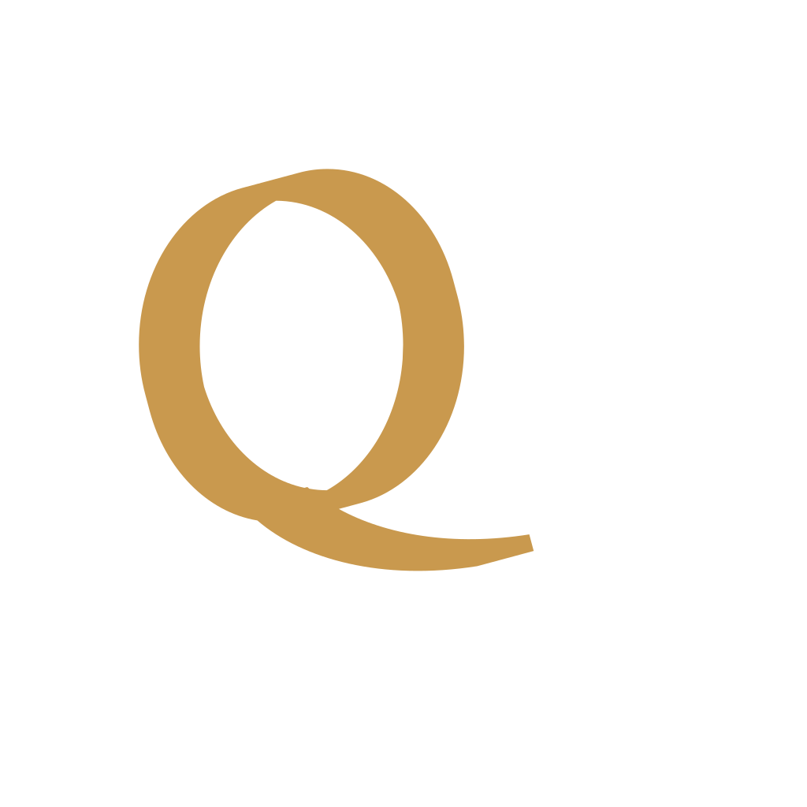
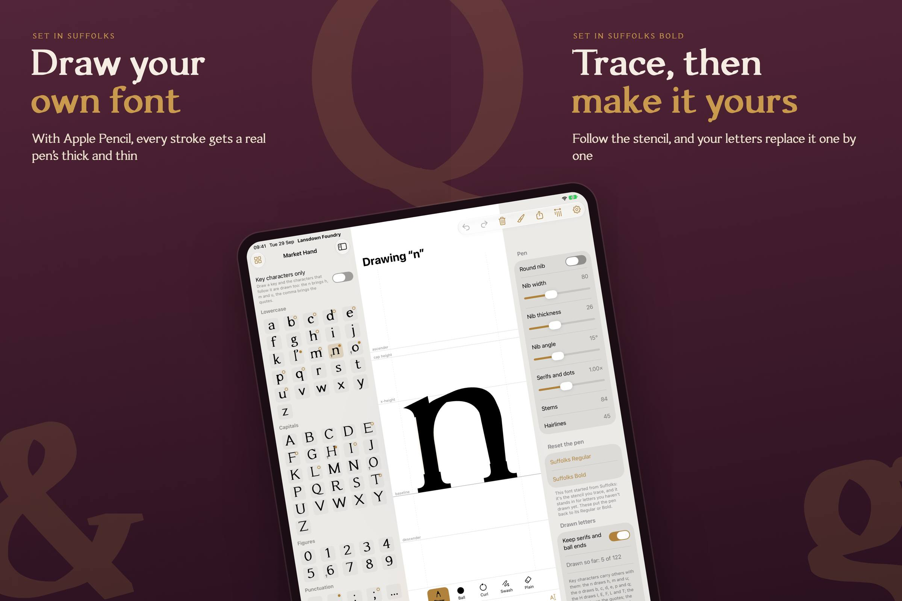
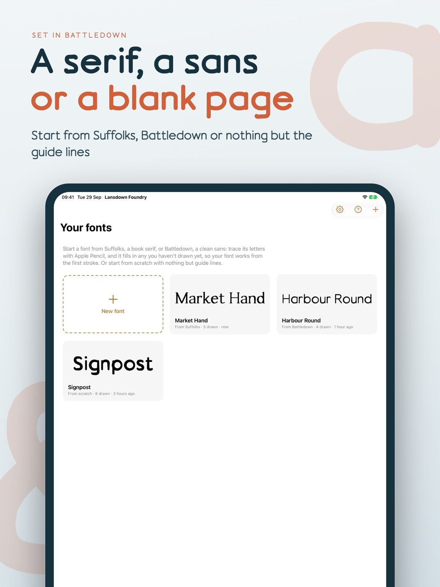
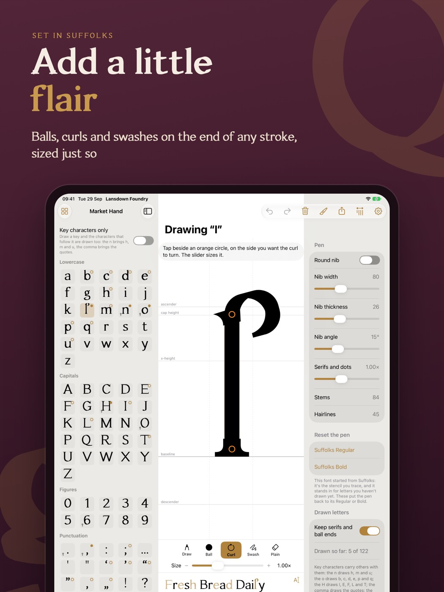
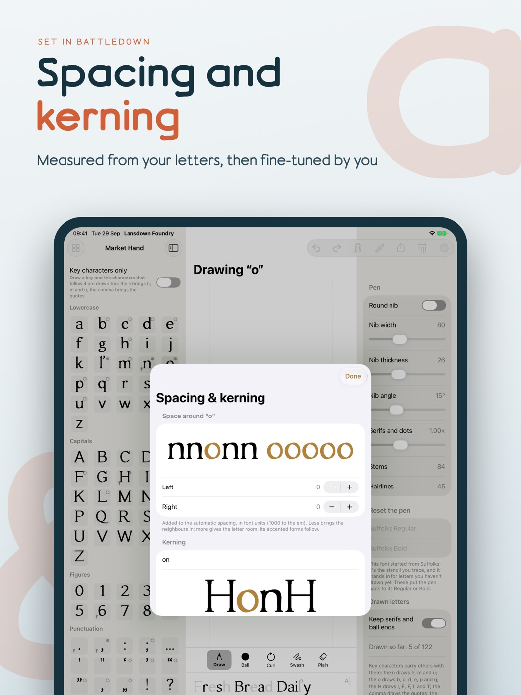
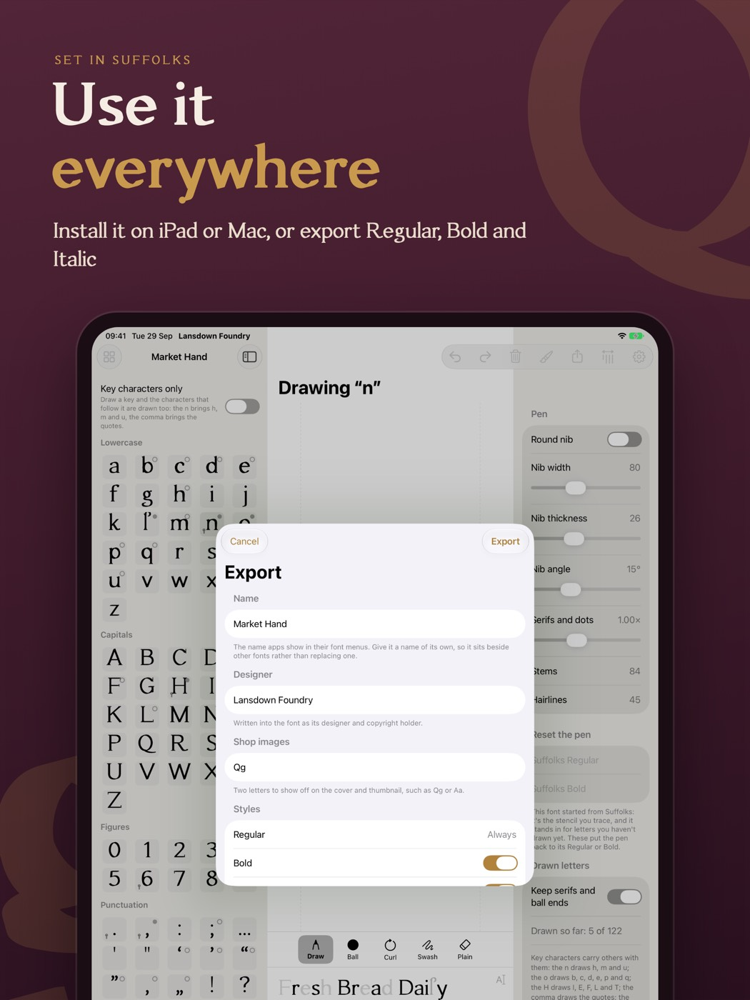
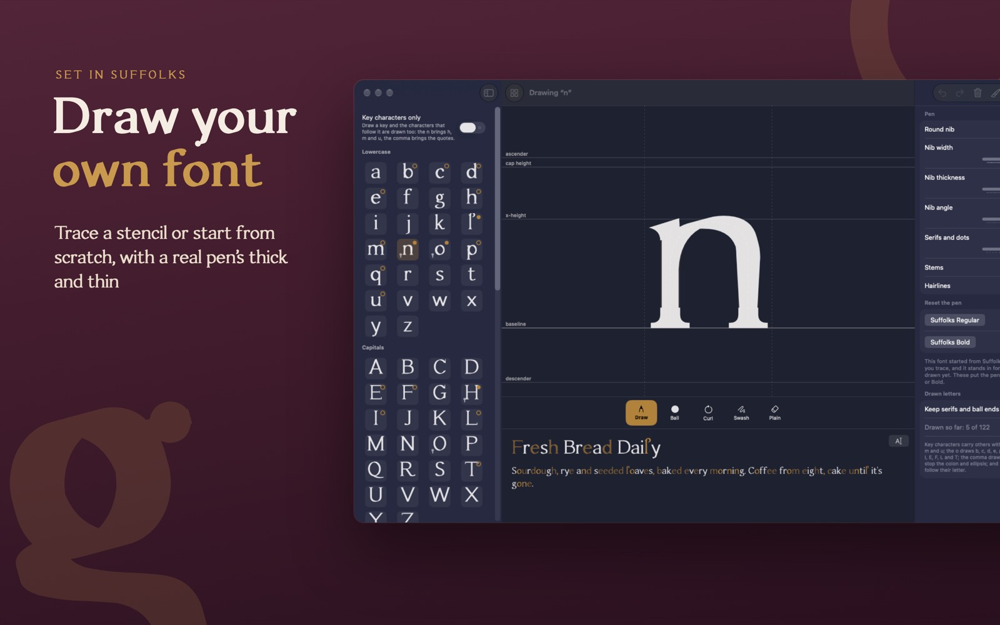
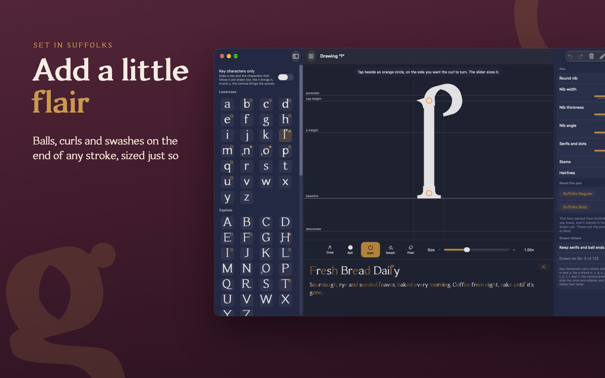
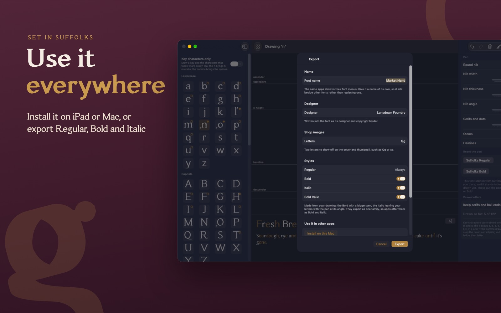
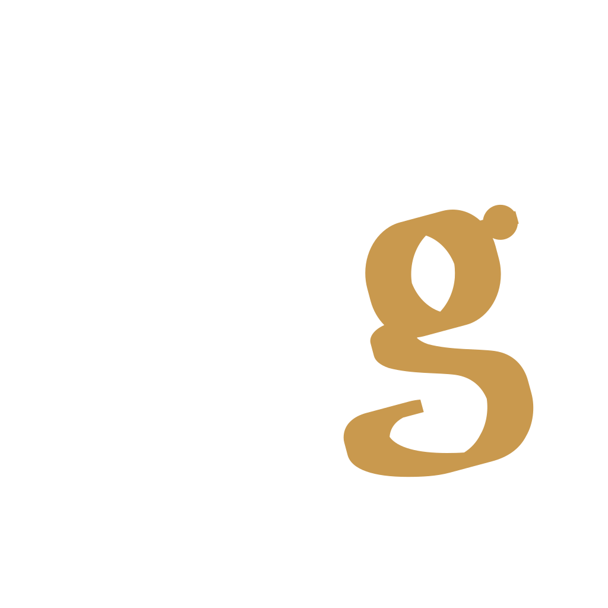

Draw with a real pen
Every stroke uses a calligraphic nib, so thick and thin come from the pen itself. Press harder for a heavier stroke, or switch to a round nib for even lines.

Draw and export your own fonts
Design a typeface with Apple Pencil, then use it in every app. Your strokes become a real, installable font, with the thick and thin of a pen, kerning and accents.

Letterpress, by hand
Trace the stencil's dashed lines and your letters replace it one by one. Letters you haven't drawn yet stand in from the design, so your font works from the very first stroke.
Every stroke uses a calligraphic nib, so thick and thin come from the pen itself. Press harder for a heavier stroke, or switch to a round nib for even lines.
Draw the n and you get h, m and u. The o brings b, c, d, e, p and q. Accented letters follow their letter, so a whole Western European character set comes along.
Put a ball, a curl or a swash on the end of any stroke, turn it whichever way you like, and size it with a slider. Serifs follow your stems.
Spacing measured from your letters, automatic kerning, and Bold, Italic and Bold Italic made from your drawing as one family.
Install on your iPad or Mac for Pages, Keynote, Procreate and more, or export TrueType, WOFF and WOFF2 for the web.
Fonts stay in step between iPad and Mac through iCloud Drive, and appear in the Files app. No account, no ads, nothing collected.
Three starting points
Suffolks, Battledown and Leckhampton come with the app in their Regular weights, free to install too. This whole page is set in them.
Book serif · Regular and Bold
A warm book serif drawn with a broad pen, with bracketed serifs and ball ends. Named after the Suffolks in Cheltenham.
Sphinx of black quartz, judge my vow.
ABCDEFGHIJKLMNOPQRSTUVWXYZ
abcdefghijklmnopqrstuvwxyz
0123456789 &£€!?@
Quick zephyrs blow, vexing daft Jim
Quick zephyrs blow, vexing daft Jim
Rounded sans · Regular and Bold
A clean, rounded sans drawn with a round pen. Friendly and even, from captions to headlines.
Sphinx of black quartz, judge my vow.
ABCDEFGHIJKLMNOPQRSTUVWXYZ
abcdefghijklmnopqrstuvwxyz
0123456789 &£€!?@
Quick zephyrs blow, vexing daft Jim
Quick zephyrs blow, vexing daft Jim
Slab serif · Regular
A sturdy slab serif with square, heavy serifs. Built to be seen from across the room.
Sphinx of black quartz, judge my vow.
ABCDEFGHIJKLMNOPQRSTUVWXYZ
abcdefghijklmnopqrstuvwxyz
0123456789 &£€!?@
Quick zephyrs blow, vexing daft Jim
Ships with the app in Regular, free to install
Or begin from scratch: just the guide lines, and a font of only what you draw.
On iPad




And on Mac
On the Mac, draw with a mouse, a trackpad or a graphics tablet. Requires a Mac with Apple silicon.




Private by design
Your fonts are stored on your iPad and Mac, and kept in step through your own iCloud Drive. We never see them, and we don't collect any data about you or how you use the app.
Read our privacy policy£19.99 · One purchase · iPad and Mac
Paid up front, with no in-app purchases and no subscription. Everything, including export, is unlocked.